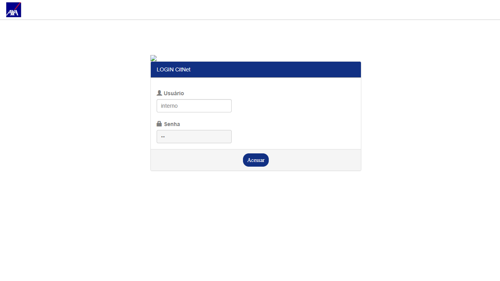
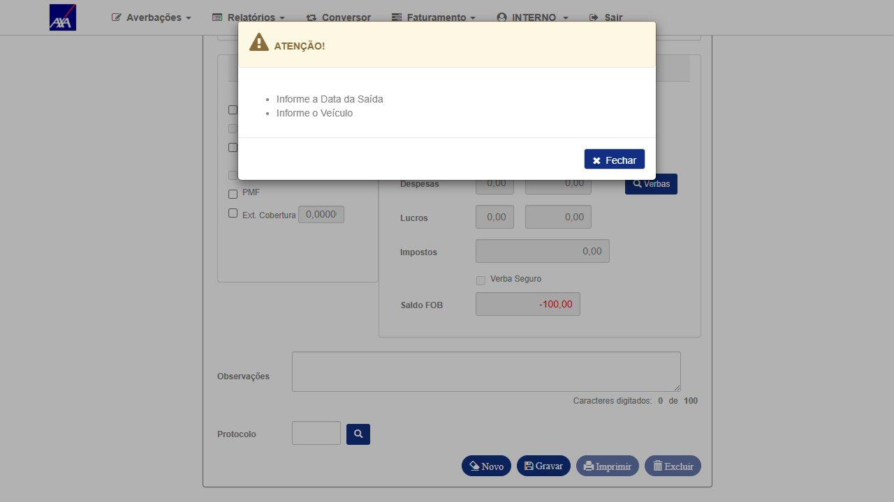
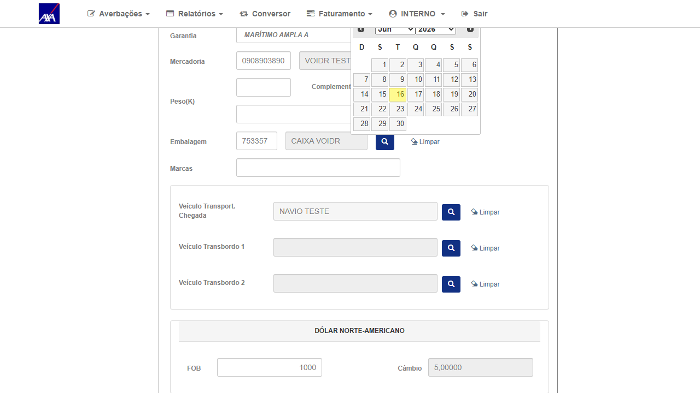
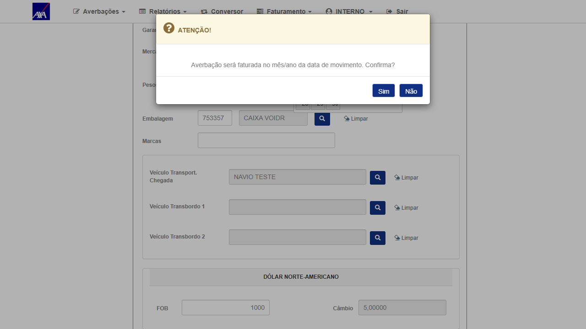

1. Resultado do Reteste
| # | Ação | Resultado obtido | Status |
|---|---|---|---|
| 1 | Login com perfil INTERNO (ROT_AUTO / T7Jjm6xF) no CITNET AXA ALFA — navegar via formulário de login | Login OK — home CITNET AXA ALFA exibida; perfil INTERNO autenticado | ✓ OK |
| 2 | Navegar via menu: Averbações → Internacional → Importação-Provisória; selecionar apólice 333, subgrupo 1, filial 1; clicar Novo; preencher campos (país, cobertura, datas, navio); digitar valor no campo FOB e acionar blur | Campo Câmbio preenchido automaticamente com 5,00000 — valor carregado da Cotação de Moedas global (moeda 220 = Dólar Americano) | ✓ PASS — Câmbio auto-preenchido |
| 3 | Clicar em Gravar com câmbio = 5,00000 preenchido | Modal de confirmação exibido: "Averbação será faturada no mês/ano da data de movimento. Confirma?" — validação de câmbio passou; formulário aceito pelo servidor | ✓ PASS — Validação de câmbio aceita |
2. Confirmação do Fix
Campo: Câmbio (v_cambio)
Valor auto-preenchido: 5,00000
Fonte: Cotação de Moedas global — moeda 220 (Dólar Americano)
Trigger: blur event no campo FOB (v_fob)
Perfil: INTERNO
Ambiente: CITNET AXA ALFA
Data: 16/06/2026
Mecanismo do fix: O campo câmbio é preenchido via chamada AJAX ao endpoint de Cotação de Moedas
acionada quando o campo FOB perde o foco (blur event). Com o fix, a busca retorna o valor cadastrado para a moeda 220
(USD = 5,00000) e o campo é preenchido automaticamente. Antes do fix, o campo ficava vazio e a averbação não podia ser gravada.
3. Dados do Cenário
| Campo | Valor |
|---|---|
| Ambiente | CITNET AXA ALFA — https://axa-hml-faturamento.nsseg.com.br/alfa/citnet/ |
| Perfil / Usuário | INTERNO — ROT_AUTO / T7Jjm6xF |
| Apólice / Subgrupo / Filial | 333 / 1 / 1 |
| Data do reteste | 16/06/2026 |
| Tela | Averbações → Internacional → Importação-Provisória |
| Campo verificado | Câmbio (v_cambio) — auto-preenchido após blur em FOB |
| Valor câmbio | 5,00000 — Cotação de Moedas moeda 220 (USD) |
| Resultado | PASS — Fix validado; câmbio auto-preenchido corretamente |
4. Evidências
Clique nas imagens para ampliar.

01 — OK
Formulário de login — credenciais perfil INTERNO inseridas
Formulário de login — credenciais perfil INTERNO inseridas

02 — OK
Login INTERNO confirmado — home CITNET AXA ALFA
Login INTERNO confirmado — home CITNET AXA ALFA

03 — PASS
Campo Câmbio auto-preenchido com 5,00000 após blur no campo FOB — fix funcionando
Campo Câmbio auto-preenchido com 5,00000 após blur no campo FOB — fix funcionando

04 — OK
Formulário preenchido com câmbio = 5,00000 — pronto para gravar
Formulário preenchido com câmbio = 5,00000 — pronto para gravar

05 — PASS
Modal "Averbação será faturada no mês/ano da data de movimento. Confirma?" — câmbio validado pelo servidor; fix confirmado
Modal "Averbação será faturada no mês/ano da data de movimento. Confirma?" — câmbio validado pelo servidor; fix confirmado
5. Conclusão
O campo Câmbio nas averbações Internacionais (perfil INTERNO) é automaticamente preenchido com o valor da Cotação de Moedas global (moeda 220 = USD = 5,00000) quando o campo FOB perde o foco. O modal de confirmação aparece ao gravar, confirmando que a validação de câmbio passou corretamente no servidor. Fix validado no ALFA em 16/06/2026.